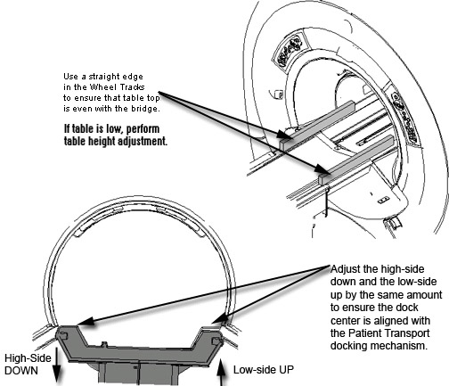

Illustration 4: Using Alignment Points Between Table and Bridge

| NOTE: | Turning the caster one complete revolution raises or lowers the caster by 1 mm. You cannot make quarter or half turns on any caster because the collar has to return to its home position. |
Illustration 4: Using Alignment Points Between Table and Bridge
Illustration 5: Using a Straight Edge
